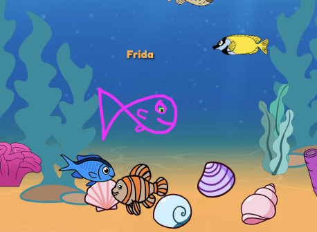

01
Projektet
Et digitalt univers for børn
Fishgame blev udviklet som en interaktiv oplevelse til akvariet i Storcenter Nord. Idéen var at kombinere leg, læring og kreativitet ved at lade børn tegne deres egen fisk og efterfølgende se den blive en del af et digitalt undervandsunivers.
Projektet gav os mulighed for at arbejde med hele processen fra observation og idéudvikling til UI-design, prototype, brugertest og udvikling af den færdige løsning.
